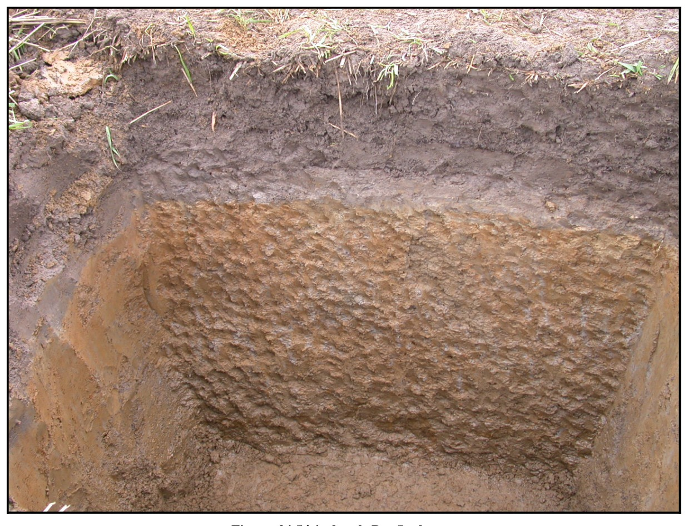

Identification & Caractéristiques Générales
La série Des Saults se développe sur des sédiments meubles d'origine fluvio-marine ou deltaïque associés aux anciennes phases de submersion de la mer de Champlain, reposant sur un matériau parental à texture fine, généralement constitué de loam argileux ou d'argile silicatée. Géomorphologiquement, ces sols occupent des positions topographiques planes à de très faibles pentes, souvent localisées à proximité immédiate des réseaux hydrographiques actuels, des talwegs et des anciennes terrasses de décharge. La surface du terrain présente un micro-relief uniforme favorisant l'accumulation relative des eaux de surface et limitant le ruissellement naturel.
Le solum, d'épaisseur modérée, présente une texture variant du loam au loam sableux en surface, reposant sur des sous-sols plus lourds caractérisés parfois par un enrichissement en argile silicatée (horizon Btg) ou par une fine stratification d'allure pseudo-lamellaire dans les horizons inférieurs. Le régime hydrique est marqué par un drainage naturel variant d'imparfait à mauvais et une perméabilité globale modérée à faible. La réaction du sol tend vers l'acidité, soutenant une végétation spontanée adaptée aux conditions d'hygrométrie temporairement excédentaire. Le profil montre en outre une faible teneur en matière organique dans les horizons de surface labourés, ainsi qu'une compacité sous-superficielle nécessitant une surveillance de la structure.
En raison de leur texture favorable en surface et de leur topographie plane, ces sols sont intensivement mis en valeur pour la production de grandes cultures et de cultures fourragères, bien que la plupart des secteurs soient défrichés depuis de longues années. Les principales contraintes agronomiques résident dans la stagnation temporaire des eaux printanières et automnales ainsi que dans les risques d'érosion hydrique localisée le long des berges et des pentes faibles. L'optimisation de leur mise en valeur requiert l'installation systématique de systèmes de drainage souterrain, dont la mise en œuvre est généralement facilitée par la proximité des exutoires naturels, combinée à des apports calcaires réguliers pour corriger l'acidité et à des pratiques de travail cultural visant à préserver la stabilité structurale.
Classification Taxonomique & Environnement Pédologique
| Ordre Pédologique | Gleysolique |
|---|---|
| Grand Groupe (SCSS) | Gleysol orthique |
| Sous-Groupe Taxonomique | Gleysol orthique |
| Famille Pédologique | Loameuse, mixte sableux, neutre |
| Mode de Dépôt Parental | Fluvio-lacustre |
| Classe de Drainage Naturel | Imparfaitement drainé |
| Régime Thermique & Humidité | Frais / Perhumide |
Description Morphologique du Profil Type
Séquences génétiques des horizons pédologiques caractérisant le profil type représentatif de la série Des Saults :
Profil représentatif — Comté de Drummond
✓ Source : Comté de Drummond — Page 122Couleur Munsell : Non précisée
Structure & Consistance : Polyédrique à granulaire
Description morphologique : Débris organiques peu décomposés.
Couleur Munsell : 10YR 2/2
Structure & Consistance : Granulée
Description morphologique : Loam sableux humifère, brun très foncé (10 YR 2/2); structure granulée; friable. La réaction (pH 4.6) est très fortement acide.
Couleur Munsell : 2.5Y 7/2
Structure & Consistance : Lamellaire
Description morphologique : Sable fin limoneux, gris clair (2.5 Y 7/2); structure lamellaire; friable. La réaction (pH 4.7) est très fortement acide.
Couleur Munsell : 2.5Y 5/2
Structure & Consistance : Lamellaire
Description morphologique : Loam sableux fin, brun gris (2.5 Y 5/2); structure lamellaire; friable. La réaction (pH 5.0) est très fortement acide.
Couleur Munsell : 5Y 6/1
Structure & Consistance : Lamellaire
Description morphologique : Loam sableux très fin, gris (5 Y 6/1); structure lamellaire; friable. La réaction (pH 5.8) est moyennement acide.
Couleur Munsell : 5Y 7/2
Structure & Consistance : Lamellaire
Description morphologique : Loam sableux très fin, gris clair (5 Y 7/2); structure lamellaire; friable. La réaction (pH 6.5) est faiblement acide.
Profil cultivé (agricole) — Comté de Mégantic
✓ Source : Comté de Mégantic — Page 43Couleur Munsell : 10YR 4/1, 10YR 6/1
Structure & Consistance : Polyédrique à granulaire
Description morphologique : Loam gris foncé à brun gris foncé (10 YR 4/1,5 h), gris (10 YR 6/1 s); particulaire; friable; racines très abondantes, très fines et microscopiques, non-orientées, exo-agrégats; limite abrupte, régulière; épaisseur de 11 à 22 cm; moyennement acide.
Couleur Munsell : 10YR 6/1 (matrice), 5Y 7/1 (marbrures)
Structure & Consistance : Polyédrique à granulaire
Description morphologique : Loam sableux très fin gris (10 YR 6/1 h), gris clair (5 Y 7/1,5 s); marbrures fréquentes, fines, distinctes et marquées, jaune brun (10 YR 6/8 h), olive pâle à jaune olive (5 Y 6/5 h ); particulaire, laminée; friable; racines abondantes, très fines et microscopiques, obliques; limite nette, onduleuse; épaisseur de 6 à 13 cm; neutre.
Couleur Munsell : 5Y 5/2 (matrice), 10YR 7/1 (marbrures)
Structure & Consistance : Polyédrique à granulaire
Description morphologique : Loam sableux très fin gris olive (5 Y 5/2 h), gris clair (10 YR 7/1,5 s); marbrures nombreuses, moyennes, distinctes et marquées, jaune brun (10 YR 6/6 h), brun jaune (10 YR 5/8 h); particulaire, laminée; friable; racines peu abondantes, très fines et microscopiques, obliques; limite nette, onduleuse; épaisseur de 36 à 48 cm; faiblement acide.
Couleur Munsell : 5Y 5/2 (matrice), 5Y 6/1 (marbrures)
Structure & Consistance : Polyédrique à granulaire
Description morphologique : Loam gris olive (5 Y 5/2 h), gris à gris olive clair (5 Y 6/1,5 s); marbrures fréquentes, fines, faibles et marquées, jaune jaune (5 YR 4/7 h), olive pâle à jaune olive (5 Y 6/5 h); particulaire, laminée; friable; racines très peu abondantes, très fines et microscopiques, obliques; neutre.
Profil cultivé (agricole) — Comté de Arthabaska — Phase légère et
✓ Source : Comté de Arthabaska — Page 29Couleur Munsell : 10YR 4/1, 10YR 6/1
Structure & Consistance : Polyédrique à granulaire
Description morphologique : Loam gris foncé à brun-gris foncé (10 YR 4/1,5 h), gris (10 YR 6/1 s); particulaire; friable; racines très abondantes, très fines et microscopiques, non orientées, exo-agrégat; limite abrupte, régulière; épaisseur de 11 à 22 cm; moyennement acide.
Couleur Munsell : 10YR 6/1, 5Y 7/1, 10YR 6/8, 5Y 6/5
Structure & Consistance : Polyédrique à granulaire
Description morphologique : Loam sableux très fin gris (10 YR 6/1 h), gris clair (5 Y 7/1,5 s); taches assez nombreuses, petites, distinctes et très marquées, jaune-brun (10 YR 6/8 h), olive pâle à jaune olive (5 Y 6/5 h); particulaire, laminée; friable; racines abondantes, très fines et microscopiques, obliques, exo-agrégat; limite nette, ondulée; épaisseur de 6 à 13 cm; neutre.
Couleur Munsell : 5Y 5/2, 10YR 7/1, 10YR 6/6, 10YR 5/8
Structure & Consistance : Polyédrique à granulaire
Description morphologique : Loam sableux très fin gris olive (5 Y 5/2 h), gris clair (10 YR 7/1,5 s); taches nombreuses, moyennes, distinctes et très marquées, jaune-brun (10 YR 6/6 h) et brun-jaune (10 YR 5/8 h); particulaire, laminée; friable; peu de racines, très fines et microscopiques, obliques, exo-agrégat; limite nette, ondulée; épaisseur de 35 à 48 cm; faiblement acide.
Couleur Munsell : 5Y 5/2, 5Y 6/1, 5YR 4/7, 5Y 6/5
Structure & Consistance : Polyédrique à granulaire
Description morphologique : Loam gris olive (5 Y 5/2 h), gris à gris olive clair (5 Y 6/1,5 s); taches assez nombreuses, petites, faibles et très marquées, rouge-jaune (5 YR 4/7 h), olive pâle à jaune olive (5 Y 6/5 h); particulaire, laminée; friable; très peu de racines, très fines et microscopiques, obliques, exo-agrégat; neutre.
Profil représentatif — Comté de Nicolet
✓ Source : Comté de Nicolet — Page 102Couleur Munsell : Non précisée
Structure & Consistance : Granuleuse et consistance friable
Description morphologique : Terre franche à terre franche sableuse, brun pâle; structure granuleuse et consistance friable; pH 5.1-6.2. L'épaisseur varie de 6 à 10 pouces.
Couleur Munsell : Non précisée
Structure & Consistance : Granuleuse et consistance friable
Description morphologique : Terre franche à terre franche argileuse, gris jaunâtre, tacheté de gley; structure granuleuse et consistance friable; pH 5.9-7.3. L'épaisseur varie de 6 à 12 pouces.
Couleur Munsell : Non précisée
Structure & Consistance : Massive et consistance ferme
Description morphologique : Terre franche argileuse de couleur grise, légèrement tachetée de gley; structure massive et consistance ferme; pH 6.3-7.9.
Profil représentatif — Comté de Bagot
✓ Source : Comté de Bagot — Page 72Couleur Munsell : 10YR 6/2
Structure & Consistance : Granulaire
Description morphologique : Loam à loam sableux, gris brun clair, (10YR 6/2). Structure granulaire. Consistance très friable, faiblement à moyennement humifère. pH. 5.1 - 6.5.
Couleur Munsell : 10YR 7/1
Structure & Consistance : Polyédrique à granulaire
Description morphologique : Horizon parfois absent, Il est distribué irrégulièrement en une couche sinueuse de ½ à 3" d'épaisseur. Coloration gris pâle (10YR 7/1). Consistance friable. pH. 4.8 - 5.4.
Couleur Munsell : 10YR 6/2
Structure & Consistance : Polyédrique
Description morphologique : Loam à loam argileux, gris brun clair (10YR 6/2). Consistance friable. Structure polyédrique. Taches de rouille et gris bleuté assez abondantes. pH 6.2 - 6.5.
Couleur Munsell : 7.5YR 6/0
Structure & Consistance : Un peu massive
Description morphologique : Loam limoneux à loam argileux, gris (7.5YR 6/0). Légèrement tacheté de rouille. Consistance friable. Structure un peu massive. pH. 6.5 - 6.8.
Profils Photographiques & Planches de Terrain
Documents iconographiques, figures pédologiques et coupes de terrain documentées dans les mémoires d'inventaire pour de la série Des Saults :

Propriétés Physico-Chimiques & Analyses de Laboratoire
| Horizon | Prof. limite | pH (H₂O) | M.O. % | C tot. % | N tot. % | C.E.C. (cmol/kg) | Sable % | Limon % | Argile % | P Meh3 (mg/kg) | K (cmol/kg) | Ca (cmol/kg) | MVA (g/cm³) |
|---|---|---|---|---|---|---|---|---|---|---|---|---|---|
| Ap1 | 13.0 cm | 6.06 | 2.46 | 1.42 | 0.1 | 13.7 | 48.4 | 36.3 | 15.2 | 86.1 | 0.19 | 5.93 | 1.32 |
| Ap2 | 30.0 cm | 6.09 | 2.37 | 1.37 | 0.1 | 13.7 | 47.8 | 37.3 | 14.9 | 79.8 | 0.2 | 5.98 | 1.43 |
| B | — | 6.28 | 1.51 | 0.88 | 0.07 | 14.3 | 39.6 | 41.4 | 18.9 | 40.3 | 0.15 | 6.62 | 1.64 |
Particularités Régionales, Phases & Variantes Pédologiques
Déclinaisons régionales, faciès texturaux, phases d'érosion ou de pierrosité et variantes cartographiées par étude pour de la série Des Saults :
| Étude Régionale | Symbole | Appellation / Phase / Variante | Différenciation avec la série type (Analyse pédologique) |
|---|---|---|---|
| Comté de Arthabaska | So |
Des Saults loam sableux très fin à loam | Modalité modale de référence (type de base de la série). |
| Comté de Bagot | So |
Des Saults loam à loam limoneux | Faciès plus limoneux (loam limoneux), offrant une forte rétention en eau mais vulnérable à la battance. |
| Comté de Drummond | So |
Des Saults loam sableux très fin | Conforme à la série type de référence (caractéristiques texturales et drainage identiques). |
| Comté de Mégantic | So |
Des Saults loam sableux très fin à loam | Conforme à la série type de référence (caractéristiques texturales et drainage identiques). |
| Comté de Nicolet | So |
Des Saults loam à loam sableux | Conforme à la série type de référence (caractéristiques texturales et drainage identiques). |
| Comté de Yamaska | So |
Des Saults loam sableux | Conforme à la série type de référence (caractéristiques texturales et drainage identiques). |
| Bassin versant du Bras d'Henri | DS |
Des Saults | Conforme à la série type de référence (caractéristiques texturales et drainage identiques). |
| Étude pédologique du bassin vers | DSU |
Des Saults | Conforme à la série type de référence (caractéristiques texturales et drainage identiques). |
Distribution Pédo-Paysagère & Représentativité Cartographique (Couverture PPS 2026)
- Séraphine sable fin loameux à loam sableux fin (SPH) — co-occurrente dans 40 polygone(s)
- Le Bras loam sableux (LBS) — co-occurrente dans 38 polygone(s)
- Saint-Samuel organique (SSM) — co-occurrente dans 23 polygone(s)
Aptitudes Agronomiques, Hydropédologie & Conservation des Sols
Indicateurs Hydropédologiques & Vulnérabilité à l'Érosion (BDHP 2026)
Interprétation BDHP : Potentiel de ruissellement modérément faible. Infiltration modérée avec textures moyennes à modérément grossières.
Classement selon l'Inventaire des Terres du Canada (ITC / CLI) : Classe 2w.
- Potentiel agricole : Terroir adapté aux cultures régionales selon la texture dominante et la régie de drainage.
- Contraintes majeures : Imparfaitement drainé. Risque d'engorgement temporaire ou d'excès d'eau printanier.
- Gestion & Aménagement : Drainage souterrain ou superficiel préconisé sur les terres planes. Chaulage et apport organique régulier selon les bilans agronomiques.
- Cultures adaptées : Grandes cultures (maïs, soya, céréales), prairies fourragères et cultures maraîchères selon le contexte géomorphologique.